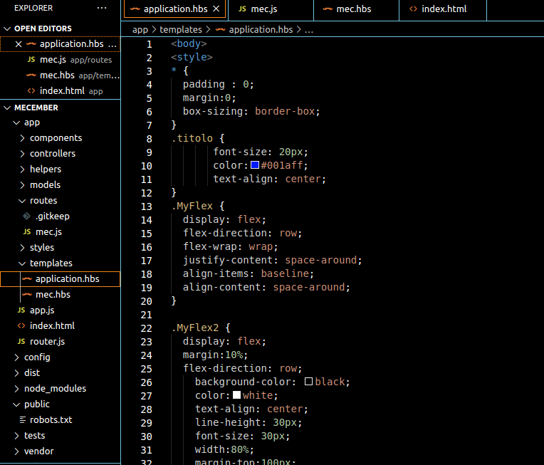
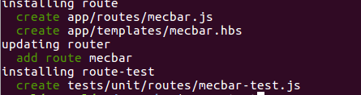
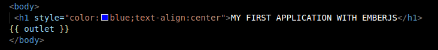
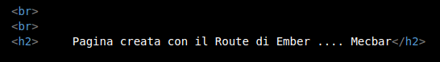
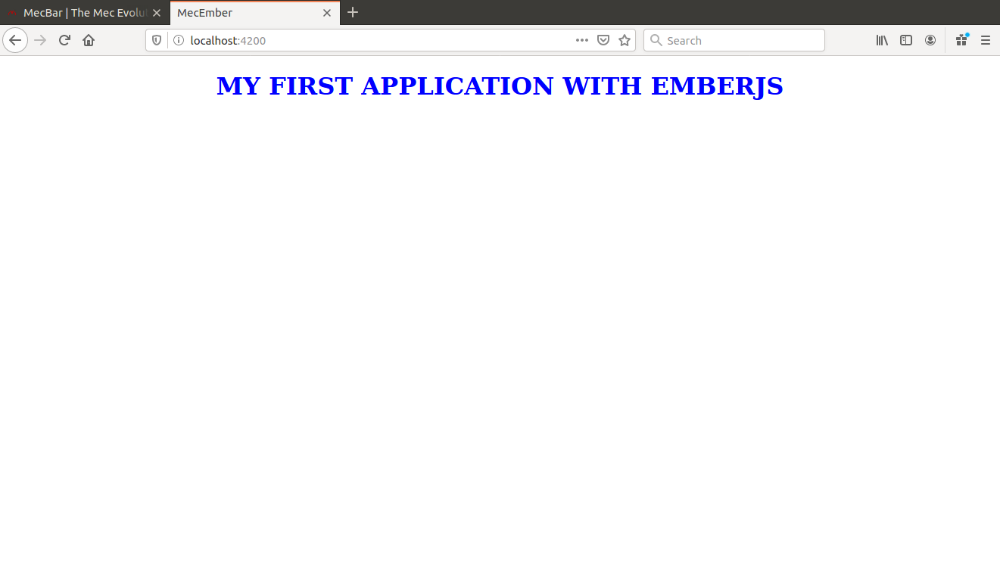
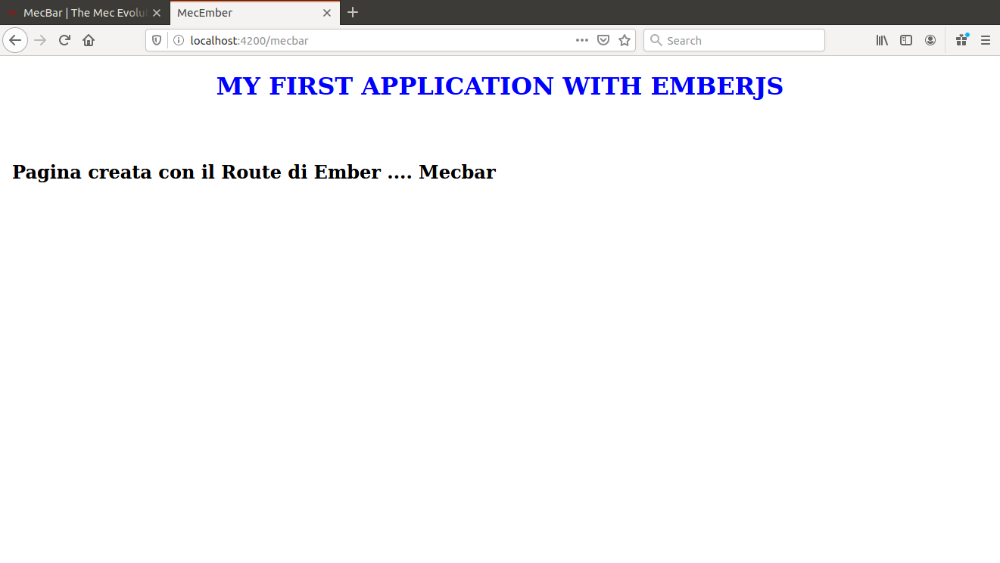
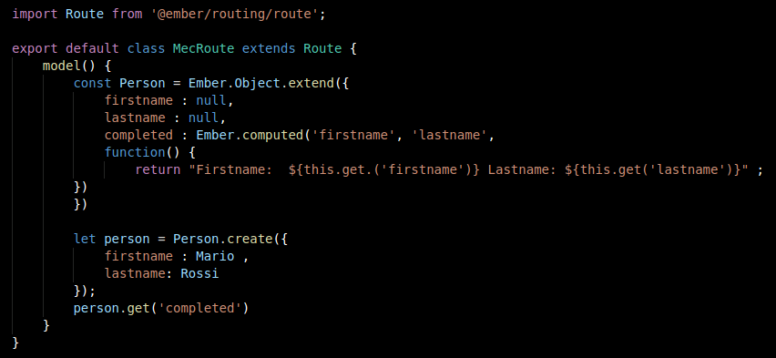

Anche EmberJs è un Web Framework open-source che ci permette di fare il render dei dati tra Back-end e Front-end.
Prerequisiti essenziali sono NodeJS e NPM.
Con il comando cli
npm install -g ember-cli installiamo le versione di ember che ci permette poi di creare la nostra applicazione.
Poi sempre da Terminal lanciare il comando
ember new nome_progetto per creare
la nostra applicazione.
Una volta creata per lanciare la nostra applicazione aprire dalla folder della app il terminal e lanciare
ember serve
Per creare una nuova pagina web diversa da quella di base fornita dall'app basta lanciare da un Terminal aperto nella folder della stessa app
ember generate template application che creerà un template vuoto(application.hbs) in cui
possiamo inserire il codice html(solo il contenuto del body) per gestire la nuova applicazione. Con lo stesso
comando possiamo creare altri documenti in cui inserire il codice html per inserire altre pagine web da gestire poi con il routing.
Per utilizzare il routing bisogna generare il relativo file con il comando
ember g route nome_file nel nostro esempio il file è stato chiamata mec e nell'immagine sottostante in cui si può osservare
la struttura del folder generato si vede il file mec.js che è appunto il file creato.

Nella immagine sottostante si riproduce la creazione di un nuovo file di routing con l'indicazione dei file creati.

Vediamo che è stato creato il file mecbar.js ed il template mecbar.hbs. All'interno di questo file andremo ad inserire del codice html
per poi vedere i risultati ottenuti.
Ora vediamo i 2 file applicazione.hbs e mecbar.hbs


Il risultato invece è il seguente inserenfo la pagina iniziale con il link localhost:4200

mentre se andiamo all'indirizzo localhost:4200/mecbar otteniamo la seguente pagina

come possiamo vedere abbiamo ottenuto l'unione dei contenuti dei 2 file .hbs
Ember ci fornisce un intero ecosistema che noi possiamo modellare per creare applicazioni complete e scalabili.
Ad esempio per creare degli oggetti bisogna utilizzare gli oggetti predefiniti exdendendo gli oggetti predefiniti.
Vediamo un esempio per creare un oggetto.
